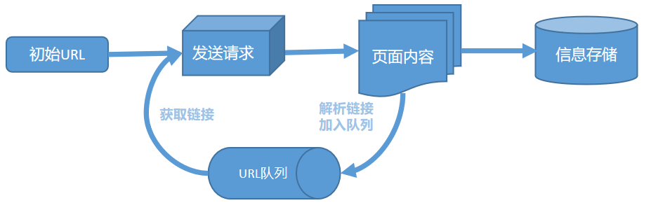
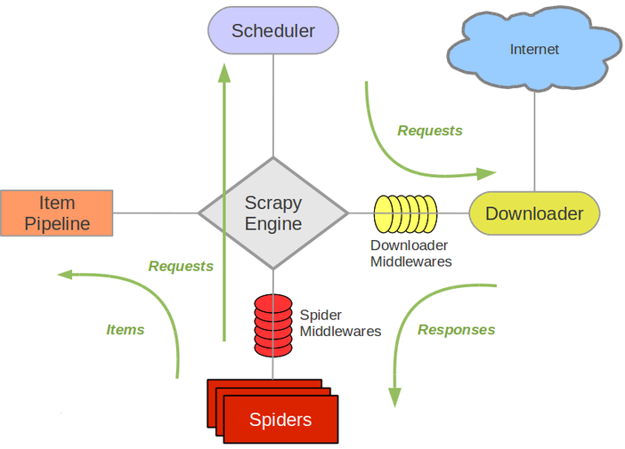

爬虫使用范围广泛，对于程序员或者学者来说，可谓必备基础技能之一。而且满足日常数据分析的要求并不需要深入学习爬虫，简单了解爬虫的基本原理，以及与爬虫相关的常用包就能够快速使用。
为了明晰爬虫学习流程、加深自身的记忆，特整理文档记录所学。
爬虫基本流程
学习爬虫之前不防先从宏观角度，了解爬虫的全部流程。
爬虫简单来说，可以分为以下四步：
- 获取url
- 发送请求，获取页面
- 解析页面，获取所需内容
- 内容存储
这只是简单的描述，实际过程中不可能只爬取一个页面内容。对于爬取多个页面的情况，或者事先准备需要爬取的全部页面链接，或者在爬取过程中动态向爬取队列中添加新的页面链接。

常用爬虫包
请求包：request
解析包：lxml，Beautiful Soup，XPth
相关包的使用不做具体介绍，通过实操能够很快掌握
爬虫框架Scarpy
为了简化爬虫代码的书写，使用框架能够帮助我们快速实现需求。Scrapy是非常优秀的爬虫框架，将会作为我今后优先使用的框架，所以重点学习一下。

Scrapy 重要的模块：
spider. 用户使用过程中不可避免的模块，请求与解析操作都将在此模块中完成。
pipelines. 数据后续处理，如存储操作。
items. 数据的格式规范。
接下来详细介绍一下这几个模块。
Spider
可使用 scrapy genspider spider名 域名
创建新的spider模块。spider模块有一些比较重要的基础：
name. 爬虫名称，是定义Spider名字的名字，必须唯一。
allowed_domains. 允许爬取的域名，是可选配置，不在此范围的链接不会被跟进爬取 。
start_urls. 起始的URL列表，当我们没有实现 start_requests()方法时,默认会从这个列表开始抓取。
start_requests(). 此方法用于生成初始请求，它必须返回一个可迭代对象 。 此方法会默认使用 start_urls 里面的URL来构造Request，而且Request是GET 请求方式。如果我们想在启动时以 POST方式访问某个站点，可以直接重写这个方法，发送 POST请求时使用 FormRequest即可 。
parse(). 当Response没有指定回调函数时，该方法会默认被调用。它负责处理 Response，处理返回结果，并从中提取想要的数据和下一步的请求，然后返回。该方法需要返回一个包含Request或 ltem的可迭代对象。
piplines
使用piplines需要在settings.py文件中配置。只要piplines被配置，Spider里面返回的Item都将依次被配置的piplines处理，但是可使用条件跳过无关处理过程。
我们可以自定义ItemPipeline，只需要实现指定的方法，其中必须要实现的一个方法是：process_item(item, spider)